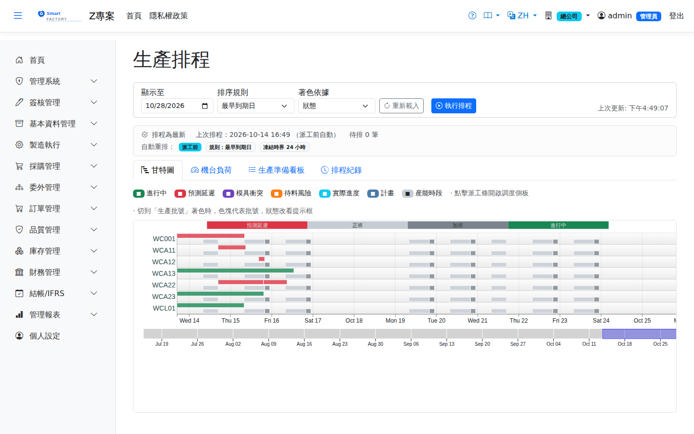
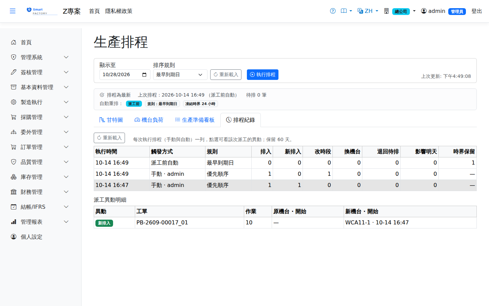

生產排程Production Schedule
以甘特圖呈現各機台的派工安排，支援重排程。排程引擎依工作日曆＋班別（真實可用時段）排列，已凍結（投產）工單不受重排影響；待料風險與模具衝突（同時段同模具跨機台使用）會以顏色標示，但不硬性阻擋，詳見下方〈甘特圖顏色〉。Shows the dispatches on each machine as a Gantt chart and supports rescheduling. The scheduling engine lays work out on the work calendar and shift pattern (genuinely available time); frozen (released) work orders are not moved by a reschedule. Material risk and tooling conflicts (the same tooling claimed by more than one machine in the same period) are marked by colour but not blocked — see "Gantt chart colours" below.

作業流程Process
排程操作Scheduling actions
自動重排排程Automatic rescheduling
預設排程只在按「執行排程」時更新。在By default the schedule is only updated when someone clicks "Run Schedule". Under 系統參數 → 製造設定System Parameters → Manufacturing Settings（或各廠的 (or each plant's 廠別參數plant parameters）可開啟三種自動重排，可以並用：) you can turn on three kinds of automatic rescheduling, which can be combined:
| 時機When | 怎麼運作How it works |
|---|---|
| 異動後After changes | 系統每分鐘檢查一次排程是否過時；過時且最後一筆異動已安靜 90 秒就重排。現場持續報工、異動不斷時，最多等 10 分鐘也會重排。The system checks every minute whether the schedule is out of date; when it is and the last change was 90 seconds ago, it re-runs. If changes keep coming (continuous production reporting, for example), it re-runs after at most 10 minutes anyway. |
| 派工前Before dispatch | 開啟派工作業（查詢時）、手機派工清單、生產準備看板（桌機與手機）、本畫面，以及 17:00 生產準備提醒送出前，排程若已過時就先重排，約數秒後才顯示。重排失敗時畫面照常顯示既有排程。When Dispatch Operations is searched, the mobile dispatch list or the Preparation Board (desktop and mobile) or this screen is opened, and before the 17:00 preparation alert is sent, an out-of-date schedule is re-run first, so the page appears a few seconds later. If the re-run fails, the page still shows the existing schedule. |
| 每日定時Daily | 每天設定的時刻全量重排一次（不論是否過時），建議早於 17:00 的準備提醒。伺服器在那個時刻沒開機，當天之內開機後補跑；同一天不會重跑。A full re-run once a day at the set time, whether or not the schedule is out of date; set it before the 17:00 preparation alert. If the server was off at that time it runs once it is back the same day, and it never runs twice on one day. |
排序規則與凍結時界Sequencing rule and freeze window
自動重排與手動相同：準備中、準備完成、待首件、生產中與暫停的派工不移動，人指定的機台會保留。自動重排在 17:00 之後若改到Automatic runs work like manual ones: dispatches in setup, ready, pending FPI, in progress or on hold stay where they are, and machines chosen by people are kept. If an automatic run after 17:00 changes the machine or time of any of 明天派工的機台或時段tomorrow's dispatches，會推播「明日派工已異動」給生產準備提醒的同一角色，請到, a "tomorrow's dispatches changed" notification goes to the same role as the preparation alert; check staging and setup on the 生產準備看板Preparation Board確認備料與換模。.
計畫時間如何隨進度更新How planned times follow progress
不必重排排程，派工的計畫時間也會跟著現場進度調整，分兩層：Even without rescheduling, planned dispatch times follow shop-floor progress, in two layers:
排程紀錄Run history
「排程紀錄」頁籤列出每一次執行排程（手動與自動都算），保留 60 天。開啟自動重排後不再有人親手按排程，派工為什麼移動要從這裡看。The "Run History" tab lists every schedule run, manual or automatic, for 60 days. Once automatic rescheduling is on, nobody clicks Run Schedule by hand any more, so this is where you see why dispatches moved.

| 欄位Column | 說明Meaning |
|---|---|
| 執行時間、觸發方式、規則Run at, Trigger, Rule | 何時、由誰或哪一種自動時機（異動後／派工前／每日定時）、用哪一個排序規則執行。When the run happened, who started it or which automatic trigger did (after changes / before dispatch / daily), and which sequencing rule it used. |
| 排入Scheduled | 這次配置到時段的派工數（含位置沒變的）。Dispatches given a slot in this run, including ones whose slot did not change. |
| 新排入／改時段／換機台／退回待排Newly scheduled / Time changed / Machine changed / Back to pending | 與這次排程前相比真正有變的派工數：原本待排這次排入、同機台開始時刻改變、改到另一台機台、原本已排這次排不進而退回待排。Dispatches that actually changed compared with before the run: pending ones now placed, ones whose start moved on the same machine, ones moved to another machine, and scheduled ones that could not be placed and went back to pending. |
| 影響明天Affects tomorrow | 上述異動中，原本或改後落在明天的派工數；大於 0 時以紅字標示，請到生產準備看板確認備料與換模。How many of those changes were, or now are, on tomorrow; shown in red when above 0 — check staging and setup on the Preparation Board. |
| 時界保留Kept by freeze window | 因凍結時界而保留原機台與時段的派工數；沒有使用時界的執行顯示「—」。Dispatches kept in place by the freeze window; "—" for runs without one. |
點選一列，下方列出該次每張派工的異動（工單、工序、原機台與開始、新機台與開始）。單次異動超過 1000 筆時只列前 1000 筆，上方筆數仍是全部。每晚 01:00 的校準不換機台、不改先後，不記在排程紀錄。Click a row to list each dispatch that changed in that run (work order, operation, old machine and start, new machine and start). If a run changed more than 1,000 dispatches only the first 1,000 are listed; the counts above still cover all of them. The 01:00 nightly calibration does not change machines or order and is not recorded here.
甘特圖顏色Gantt chart colours
著色依據Colour by
甘特圖上方的「著色依據」可切換兩種著色方式，切換時會重新載入資料：The "Colour By" selector above the chart switches between two ways of colouring, and reloads the data when you change it:
狀態色表Status colours
一張派工單只會有一個顏色。同時符合多個狀況時，依下表由上而下取第一個符合的（例如已在進行中的派工即使延遲，仍顯示為綠色，延遲另以滑鼠提示標註）。A dispatch only ever carries one colour. When more than one condition applies, the first match from the top of this table wins — a dispatch already in progress stays green even if it is late, and the lateness is called out in the tooltip instead.
| 顏色Colour | 圖例Legend | 代表意義Meaning |
|---|---|---|
| 進行中In progress | 派工狀態為「進行中」。準備中、待首件檢驗、暫停不算，那些仍顯示為計畫色The dispatch status is "In progress". Setup, awaiting first-piece inspection and on-hold do not count and still show in the planned colour | |
| 預測延遲Predicted late | 此派工所屬生產批被預測會延遲：該批所有未完工派工的最晚排定結束時間，已晚於生產批的預計完工日。因為是批次層級的判定，該批的每一張派工都會轉紅，不是只有拖到的那一張。判定在每次報工後與每晚 01:00 校準時更新（見下方「計畫時間如何隨進度更新」）The production batch this dispatch belongs to is predicted to be late: the latest scheduled finish among the batch's unclosed dispatches falls after the batch's planned completion date. The judgement is made per batch, so every dispatch in that batch turns red, not only the one that overran. It is refreshed after each production report and by the 01:00 nightly calibration (see "How planned times follow progress" below) | |
| 模具衝突Tooling conflict | 同一時段同一模具被另一台機台的派工佔用The same tooling is claimed by a dispatch on another machine in the same period | |
| 待料風險Material risk | 用料尚未備妥，即使已排程仍可能開不了工Material is not staged, so the operation may not be able to start even though it is scheduled | |
| 計畫Planned | 已排程且無上述任何狀況——正常Scheduled with none of the conditions above — normal |
產能列與實際進度列Capacity and actual-progress rows
每台機台除了派工列之外，還會依資料多寡帶出另外兩列。它們刻意用固定顏色，不隨「著色依據」變動。Besides its dispatch row, each machine may show two further rows depending on the data. These keep fixed colours and do not follow the "Colour By" selector.
| 顏色Colour | 列Row | 說明Guide |
|---|---|---|
| 正班產能Regular capacity | 工作日曆的正班可用時段。中間的空白即為午休與班距，排程不會排進去Regular working time from the work calendar. The gaps are meal breaks and the space between shifts, into which the scheduler will not place work | |
| 加班產能Overtime capacity | 工作日曆的加班時段，顏色較深以與正班區分，接在當日正班的最後一段之後。排程引擎會把作業排進加班：可用時段含加班，所以這一列畫得出來的時間也排得進去。加班時數在〈工作日曆〉逐日維護Overtime from the work calendar, in a darker shade to separate it from regular time, placed directly after the last regular segment of the day. The scheduling engine does place work into overtime: available time includes overtime, so anything this row can draw can also be scheduled. Overtime hours are maintained day by day on the Work Calendar screen | |
| 實際進度Actual progress | 見下方說明See below |
欄位說明Field reference
機台負荷欄位Machine load fields
| 欄位Field | 說明Guide |
|---|---|
| 機台 / 工作中心Machine / Work center | 負荷統計的對象Subject of the load statistics |
| 已排(分)Sched.(min) | 該機台本週已被排入的作業時間合計（含準備時間）。只算落在上班時段內的分鐘：夜間、假日、計劃停機不算；跨週或從前幾週一直生產中的派工只算本週那一段Total time scheduled on the machine this week (setup time included). Only minutes inside working hours count: nights, holidays and planned downtime are excluded, and a dispatch that spans weeks (or has been running since earlier weeks) counts only its part in this week |
| 可用(分)Avail.(min) | 依工作日曆的班別時段（正班＋加班，與排程引擎排工時用的是同一份）扣除計畫停機後的可用產能分鐘數Available capacity in minutes from the work calendar shift segments (regular + overtime, the same segments the scheduling engine uses) after planned downtime has been deducted |
| 利用率Utilization | 已排 ÷ 可用；超過 100% 代表超載，需調整排程或加班Scheduled ÷ available; over 100% means overload and calls for rescheduling or overtime |
| 未排Unscheduled | 尚未指派到機台的作業數Number of operations not yet assigned to a machine |
| 延遲Late | 排定結束時間已晚於須完成日的作業數，是交期風險的直接指標Number of operations scheduled to finish after the required completion date, a direct measure of delivery risk |
排程作業欄位Scheduled operation fields
| 欄位Field | 說明Guide |
|---|---|
| 機台Machine | 作業指派到的機台；未指派者列於「未排」Machine the operation is assigned to; unassigned operations are listed under "Unscheduled" |
| 工單 / 作業Work order / Operation | 排程的工單號與工序Work order number and operation being scheduled |
| 數量Count | 本次作業的加工數量Quantity processed in this session |
| 排定開始 / 排定結束Scheduled start / Scheduled end | 排程計算出的作業起訖時間，依可用產能與前後工序相依關係推算Start and end times of the operation from the scheduler, derived from available capacity and the dependency between operations |
| 準備(分)Setup(min) | 本作業的換模／換線時間；同機台連續相同模具可省去重複換模Tooling or line changeover time for this operation; running the same tooling back to back on a machine avoids changing over again |
| 模具/治具Tooling / fixture | 本作業需使用的模具；同一時段同一模具被兩張派工佔用即為模具衝突Tooling this operation needs; the same tooling claimed by two dispatches in the same period is a tooling conflict |
| 備料狀態Material Status | 已備料／備料中／未備料。未備料的作業即使已排程也存在待料風險Staged / staging / not staged. An operation that is not staged carries a material risk even if it has been scheduled |
相關畫面Related screens
排程查詢Schedule Query、生產準備看板Preparation Board、派工作業Dispatch Operations